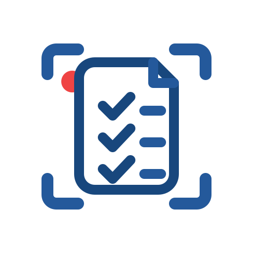

Advanced Tools (Optional)
Use team sync after polishing SOPs in the editor. Raw captures are best kept local.
Team Sync
Auth: checking...
Sync: checking...
Recent Captures
Loading captures...

Capture browser workflows and open them in the editor.
Use team sync after polishing SOPs in the editor. Raw captures are best kept local.
Team Sync
Auth: checking...
Sync: checking...
Loading captures...